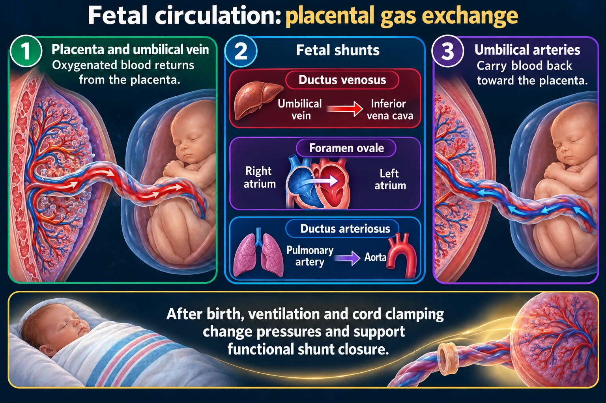
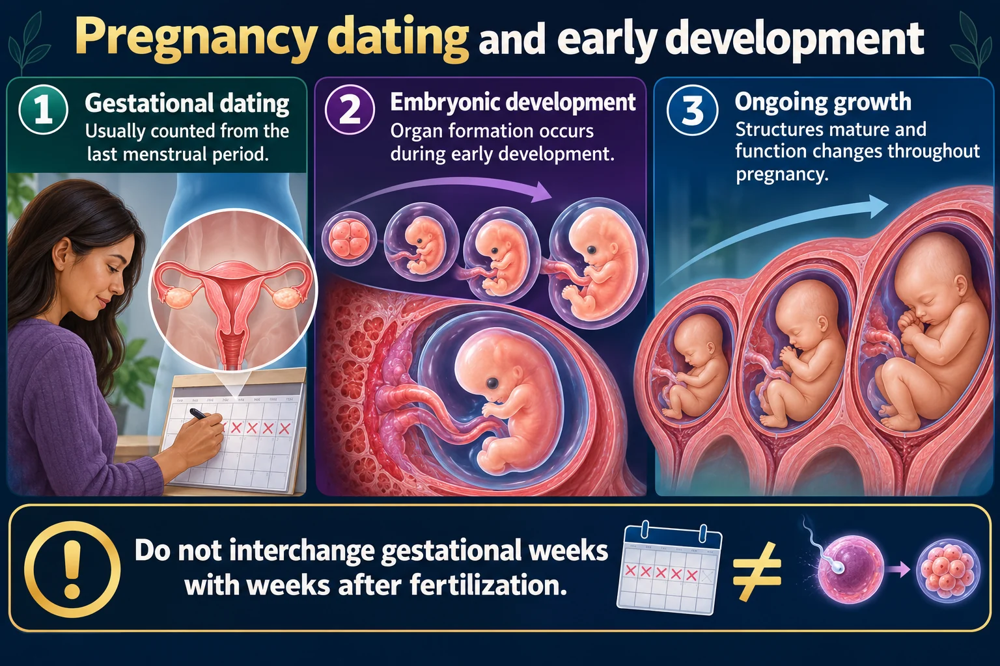

Two arteries and one vein, three shunts around the lungs, and the eight-week window when everything can go wrong.

After birth, ventilation and cord clamping change pressures and support functional shunt closure.
Placenta and umbilical vein
Oxygenated blood returns from the placenta.
Fetal shunts
Ductus venosus, foramen ovale and ductus arteriosus direct flow.
Umbilical arteries
Carry blood back toward the placenta.
Ductus venosus
Routes part of umbilical venous flow past the liver into systemic venous circulation.
Foramen ovale
Permits right-atrial to left-atrial flow.
Ductus arteriosus
Connects pulmonary artery and descending aorta, bypassing much pulmonary flow.

The cord colors are backwards from everything else you have learned, which is precisely why it gets asked.
Do not interchange gestational weeks with weeks after fertilization.
Gestational dating
Usually counted from the last menstrual period.
Embryonic development
Organ formation occurs during early development.
Ongoing growth
Structures mature and function changes throughout pregnancy.
Timing
Gestational age is approximately two weeks greater than age from fertilization in a typical cycle.
Exposure context
Effects of an exposure depend on timing, dose and other factors.
Assessment
History, ultrasound and clinical findings guide dating and evaluation.
Weeks 3 to 8 is when organs form, so it is when damage becomes permanent - and it is often before a woman knows she is pregnant.
That is the entire argument for folic acid BEFORE conception, and for treating every woman of childbearing age as potentially pregnant when prescribing.
AVA — 2 Arteries, 1 Vein
The umbilical VEIN carries OXYGENATED blood TO the baby. The two arteries carry deoxygenated blood away to the placenta.
It is the opposite of adult circulation, which is exactly why it is asked.
A two-vessel cord - one artery missing - is abnormal and prompts investigation for kidney and other anomalies. Count the vessels at birth.
| Structure | Job | Note |
|---|---|---|
| Placenta | Exchange + endocrine organ | Makes hCG, estrogen, progesterone, hPL |
| Wharton’s jelly | Cushions the cord vessels | Prevents compression |
| Amniotic fluid | Cushions, allows movement, stabilizes temperature | 800–1200 mL at term |
| Amnion / chorion | The membranes | Rupture releases the fluid |
The placenta is a filter that leaks. It passes oxygen, nutrients and maternal antibodies — and also alcohol, nicotine, most drugs and many viruses. Every teratogen question rests on that.
The lungs are full of fluid and do no work in utero, so blood is routed around them by three shunts.
| Shunt | Bypasses | Route |
|---|---|---|
| Ductus venosus | The liver | Umbilical vein → inferior vena cava |
| Foramen ovale | The lungs | Right atrium → left atrium |
| Ductus arteriosus | The lungs | Pulmonary artery → aorta |
The lungs inflate, pulmonary resistance falls, and pressure in the left side of the heart rises. That pressure change closes the foramen ovale. Rising oxygen levels close the ductus arteriosus.
A patent ductus arteriosus is one of these shunts failing to close — common in preterm infants, and treated with indomethacin or surgery.
Too little = kidneys. Too much = swallowing.